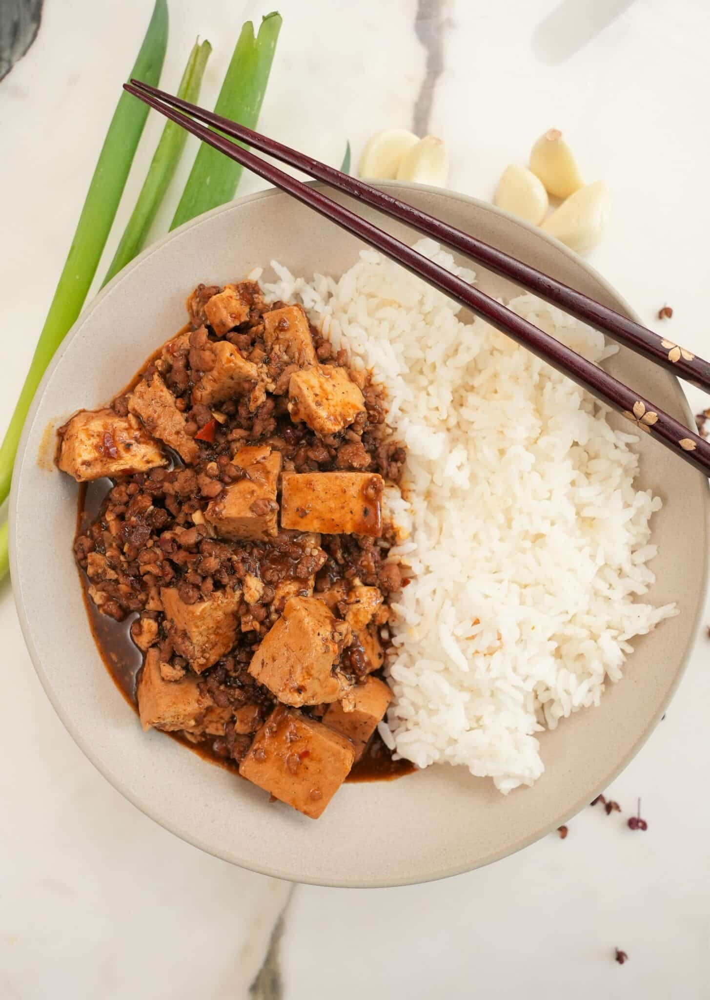

Mapo Tofu

Someone else's tofu. Looks nice.
Actually, their sauce looks pretty brown. Not sure about that. Maybe a bit modest on the chili?
Ingredients: Not serious
- 7kg tofu
- 12 oz fake mince of human kindness
- 1 tsp cod liver oil
- 6 melted down Lego minifigs (assorted styles)
- Probably an Oxo cube